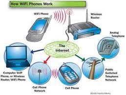

Satellite communication is a crucial form of wireless communication.
By means of satellites, people all over the earth can communicate with each other.
It may not be possible to send a signal to another country because, well, the curvature of the earth is
in the way. This is one reason why satellites are orbiting the earth because they can send a signal
amongst
themselves and eventually to the distant country. All of this at an incredibly fast speed.
NASA and other space agencies make regular use of this type of technology. Of course, sending a
satellite into the atmosphere is not cheap. Therefore the technology involved must be subjected to
significant
testing before launch.

Infrared communication is present in most homes in the form of a television remote control. However, how
does it work?
IR transmits information by means of invisible light. This means that on the electromagnetic spectrum it
lies between microwaves and visible light.
Infrared communication requires a transmitter and a photoreceiver to receive the light beam. Since any
disruption to the light will result in the photoreceiver not receiving it, IR will only function when
there is a line of sight visibility. That means that if you stand between the transmitter and receiver
it will
probably not work.

The most famous form of wireless transmission on our list, broadcast radio, was probably the first kind
of wireless communication.
Radio transmitters send out data in the form of radio waves to receiving antennae. Radio waves are forms
of electromagnetic signals. Signals are relatively narrow, and waves can be sent across various
frequencies.
This is why your car radio is able to receive signals from many different radio stations.
There are many types of users of radio communication. Radio stations that send out informative and
entertaining programs. Maritime radio channels allow ships to communicate with each other and the shore.
Ham radio enthusiasts are able to communicate and use radio communication for personal use.
Microwave technology is an effective type of communication that is used globally. This technology can be
broken down into 2 types.
The only problem is that in very dense cloudy weather the signal to the satellite can be blocked by atmospherics.
The only problem is that in very dense cloudy weather the signal to the satellite can be blocked by atmospherics.

Wi-Fi internet is a low powered wireless electronic network. These are available in almost every
shopping mall and cafe in the world. Essentially a physical wired network is connected to a router.
This creates a highly localized and low power wireless network.
From this, it is possible to connect a range of devices to the local network. However, public wireless
internet access is known to be a target for thieves and hackers. Therefore, it is essential that both
users
who connect to these networks and the providers use password protection defense methods.

The burgeoning mobile phone industry uses similar technology to Wi-Fi but on a much grander and
safer scale.
Mobile phone companies provide coverage to customers nationwide or even international scale.
They do this by means of a complex blend of local networks and transmitters together with satellite
support.

Bluetooth is a relatively new technology but is becoming more and more prevalent. It is essentially
a simple method to send information across a short distance. However, this information can include
either
messages or even files.
Bluetooth technology was originally designed to be a replacement for physical cables. However, it
does have its downsides. It has a maximum reach of 30 feet. This can be reduced further, but not
entirely
blocked by walls and other solid items.